The main idea of the project is,
that hikers want to see emotional pictures of the hike first for making an decision.
Afterwards during the hike, they don't want to look at their phone but enjoy the view.
In the end they want to share their experience.
This leads to the conclusion that going for a hike can be devided in the following three phases:
Planning
On Track
Socializing
On Track Advantages
Off Track Advantages
To provide the experience described,
several technical aspects have to be considered:
Emitting Vibration
The phone can emitt haptic signals in form of vibration. The quality of the vibration can be determined so that the user can associate an event with it. Like the morse code can be decoded by using the alphabet, the user can decode the vibrations as he is getting used to the associated events.
MEMS
The experience of setting waypoints without actually touching the phone can be achieved using the sensors of the phone. The MEMS is a microchip which detects movements to the left, right and front. Though interpreting patterns, it can tell apart steps and jumps and other possible moves.
Gyroscope Sensor
The gyroscope sensor is the sensor also used for google Maps. It can determine the position of the phone itself. With this sensor, the implementation for example of compass functions are possible. In our case, the phone knows if the user is turning and so the app can create a star at that exact point of the map.